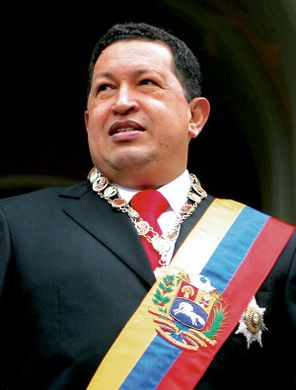

Ici on va voir des exemples d'utilisation du projet HAARP dans le cadre du controle de la météo.
En effet, le tremblement de terre d'Haïti ayant eu lieu le 12 janvier 2010 a été causé par le projet HAARP. Hugo Chavez a portée des accusations sur les États-Unis et le projet HAARP, Hugo Chavez était président du Vénézuéla de 1999 à 2013, il a accusé les États-Unis de se "prendre pour Dieu" lors d'une tribune devant un parterre de militaires. Ce n'est pas tout, il annonce aussi que c'était un exercice afin de pouvoir attaquer l'Iran plus tard. Comment ne pas croire une personne tel que le président du Vénézuéla, jamais il ne mentirait devant autant de personnes en mettant son image en jeu, la télévision publique ViveTV, il a d'ailleurs ajouté : "la semaine dernière, les tests américains ont provoqué un séisme de magnitude 6,5 sur l'échelle de Richter dans la ville d'Eurêka, en Californie, sans faire de victimes", la même expérimentation en mer des Caraïbes a, elle "causé la mort d'au moins 140 000 innocents"